Fun with
Machine Learning
by Jarek Hirniak
There are 2 types of people in the world: those who can extrapolate from incomplete data.
Machine Learning in One Picture
JK, here is the picture

Why ML is interesting?
- Data availability.
- Ability to model relationship too complex to be captured by human.
- A way towards ubiquitous computing.
- Synergy.
- $$$
- Still rapidly growing field.
Dawn of Information Age
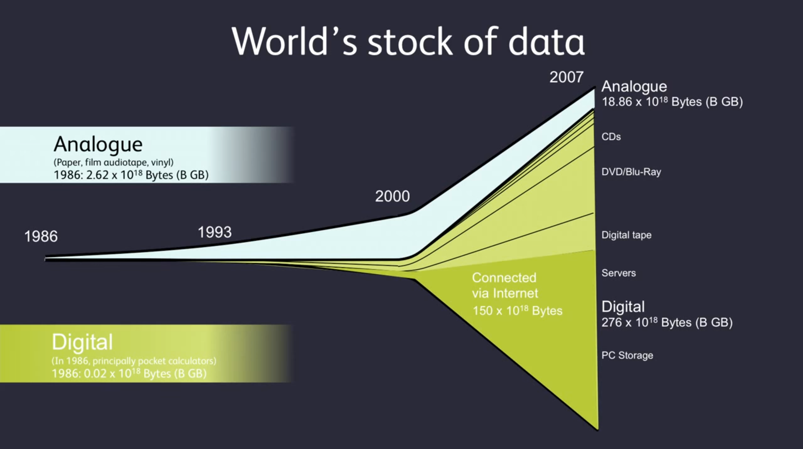Information Age: Forecast
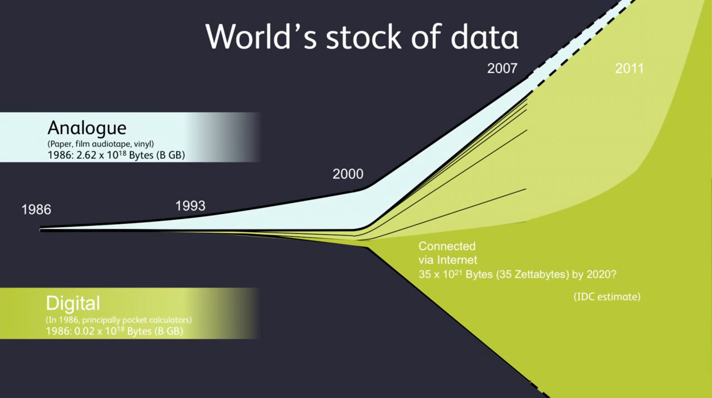This all data is really getting out of control...
Information Age: Key Observations
- 50% of data has IP address (in other words is online)!
- By 2020, almost all data will be connected.
- The abundance and ubiquitousness of data changes business intelligence models (e.g. think Encyclopedia Britannica rendered obsolete by Wikipedia).
- We literally have a whole world in our pocket.
- We no longer choose to be connected, but not to be.
- Some companies accumulated lots of data over years, in a sense they sit on a pile of gold.
- Data is our most valuable natural resource.
- But, we need to be able to connect the dots.
We track everything nowadays...

... and everything starts to track us.
... and everything starts to track us.
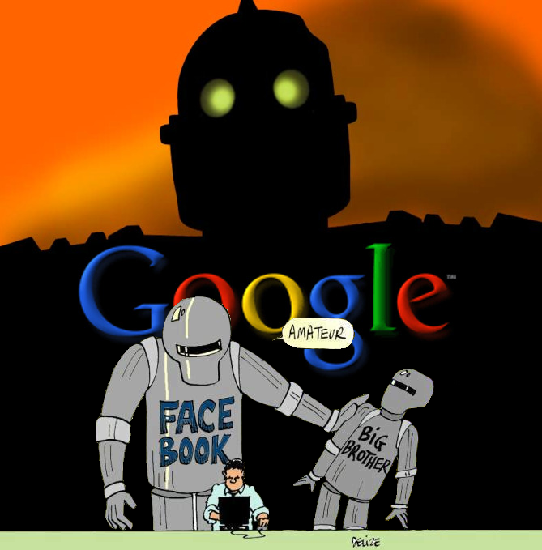Your Government
How adorable...
So, how much data is munched out there?
| Google Search | processes 20 PB a day (2008) crawls 20e9 web pages a day (2012) |
| > 100 PB of user data + 500 TB/day (2012) |
|
| Amazon Web Services | S3: 449e9 objects peak 290k requests/second (2011) 1e12 objects (2012) |
| JPMorgan Chase | 150 PB on 50k+ servers running 15k apps (2011) |
| CERN | Produces 15 PB a year that needs to be analyzed |
How much really is it?
Google processes $ 20 $ PB a day (2008).
Tolkien's The Lord of the Rings trilogy has $ 788 $ pages ($ 311 + 258 + 219 $) totalling to $ 2.5 $ MB of raw text.
$$ \frac{20 PB}{2.5 MB} = \frac{2^{50}}{2^{20}} = 2^{30} \approx 10^9 $$Google analyses an equivalent of 1 billion of LoTR trilogies every day!
It is not just collection, this data is processed.
I wish I could read so many books a day!
... and that grow is exponential.
World changed a lot, very quickly (1981 → 2016)
Applications
- Azure detects threats based on user behavior and by spotting anomalies.
- McLaren optimizes bolids performance.
- Uber predicts driver demands and calculates fare prices.
- Pro baseball players find better hitting strategies.
- Autonomous Drifting
- Optimized shopping experience - products placement, cashier-less experience, promotions, and more.
- Detecting emotions using only wireless router.
- Protecting whales by keeping ships at distance.
- User identification based on accelerometer readings.
- ... and much more.
What Machine Learning can do for you?
- personalized recommendations
- predict when you are going to churn and make you a better deal
- cut you a better deal when applying for a loan/raise/etc.
- help to build a network
- help to make sense out of the data
- make tha actual ads appeal to you
- help to build the cities of the future
- detect health problems before a doctor can
- give ensemble recommendation (based on expertise of thousands of experts)
- automate away any daunting tasks
- filter out the content that you do not want to see
- and much more...
Applications
This is crashed ad in a pizza store
Applications
For better or worse...
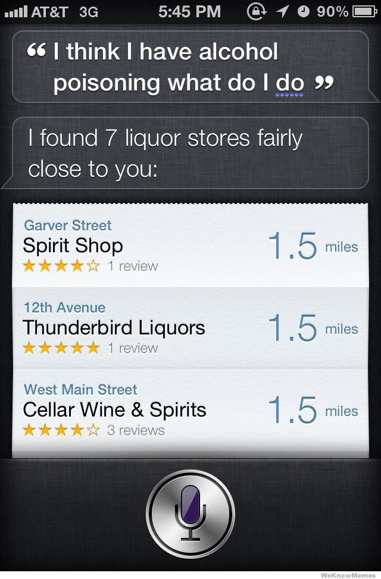Applications
Google Brain learns concept of a cat.

Applications
... and Alexa can play "tickle tickle".
Applications
Applications
Hand-written characters pattern recognition
Applications
Predicting stock value
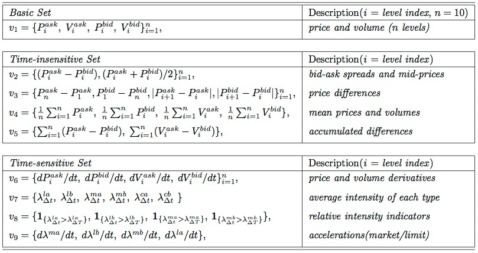Applications
So, machine learning can really solve some of our grandest and modest problems...
MI Startups Landscape
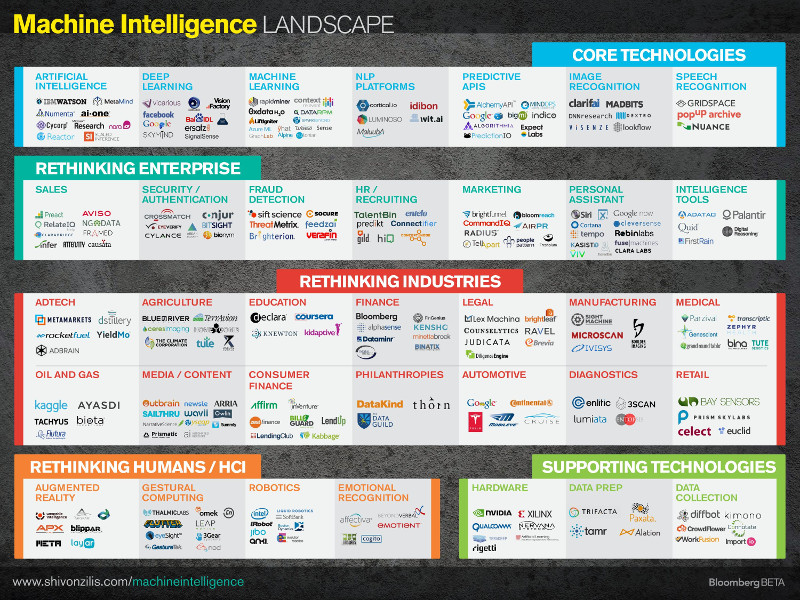Will machines replace you?
Maybe
- Do you need to come up with clever solutions?
- Are you required to personally help others?
- Does your job require to squeeze into small places?
- Does your job require negotiation?
Will machines replace you?
Will machines replace you?
So what really is machine learning?
The ability of a computer to learn without explicitly being programmed.
Types
Machine learning algorithms
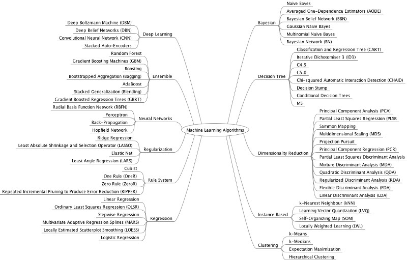Typical Machine Learning Tasks
- classification / class probability estimation - assignment of individuals to classes, e.g. people who are going to default on credit payment
- scoring / probability estimation - simlar to classification, but with probability or numerical score, e.g. 85 out of 100 on prepayment score
- regression / value estimation, e.g. how many people will renew their contracts given offer X
- similarity matching - identifying similar individuals based on data know about them, e.g. people similar to the best paying customers
- clustering - grouping of individuals without any labels, with the goal of discovering if population forms any clusters, e.g. investigating if sales team should prepare multiple different offers
Typical Machine Learning Tasks
- co-occurrence grouping - grouping entities based on transactions involving them, e.g. what items are commonly purchuased together
- profiling / behaviour description - attempts to characterize typical behaviour of a group, e.g. how many gallons of milk typical household buys weekly
- link prediction - predicts connections between data items, e.g. friends (Facebook) and colleagues (LinkedIn) suggestions
- data reduction - replacing large data set with smaller, e.g. replacing movie preferences with genres preference
- casual modeling - discovering what events and actions influence other, e.g. website A/B testing in funnel optimisation: 1 versus multiple steps checkout measure against conversion rate
OK, let's get started!
Setup
Toolbox
- Boxen
- Sum snek (here we use Python, Conda, scikit-learn, seaborn, pandas, numpy, Jupyter notebook, ...)
Why Python?
- Glue language.
- Simple syntax - algorithm looks almost the same in pseudo-code as in Python.
- Library for everything.
- Portable.
- Can be easily optimized (Cython, PyPy).
- Easy bindings with other frameworks, libraries, languages. You could schedule cluster computation from your Jupyter notebook with locally tested code using PySpark almost out of the box.

Jupyter Notebook
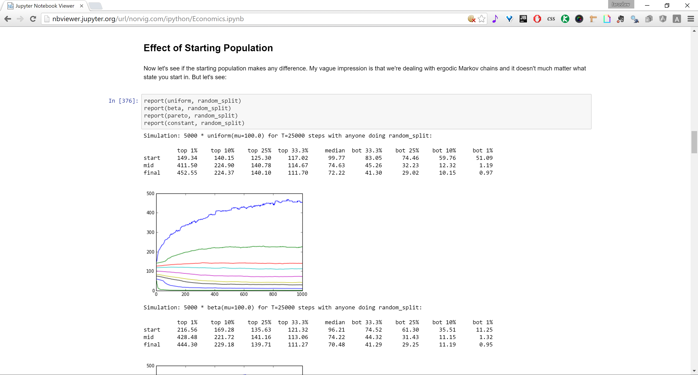Jupyter Notebooks
- Comes together with Anaconda, to run simply type 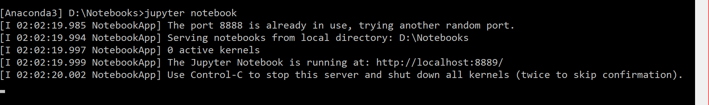 into the Anaconda console, being located in a folder where you want to store your notebooks.
- Up to IPython 3.X those were called IPython Notebooks and were monolithic part of IPython, but from IPython 4.0 language agnostic modules were separated from IPython, one of which became project Jupyter. You can read about the big split here.
Continuum Analytics
- Anaconda is the fastest growing open data science platform with $ > 400 $ of the most popular Python packages for science, math, engineering, and data analysis, including Pandas, NumPy, and scikit-learn amongst many others. There is also even more powerful version of Anaconda for enterprise.
- Miniconda - lightweight version of Anaconda.
- Conda - package and environment management system.
To get started, download and install Anaconda from here. I strongly recommend Python 3.x version as it is where the world is heading now.
Jupyter and PySpark
To hook up Conda (and Jupyter Notebook) to Apache Spark computational cluster (great for ML) install PySpark in Conda and use findspark to get to Spark Context.
import findspark
findspark.init()
import pyspark
sc = pyspark.SparkContext()
To install findspark, simply type conda install findspark into the Anaconda console.
Pandas & Jupyter Notebook
High-performance, easy-to-use data structures and data analysis tools for the Python programming language.
scikit-learn
Machine Learning framework with lots of simple, but efficient tools for data mining and data analysis.
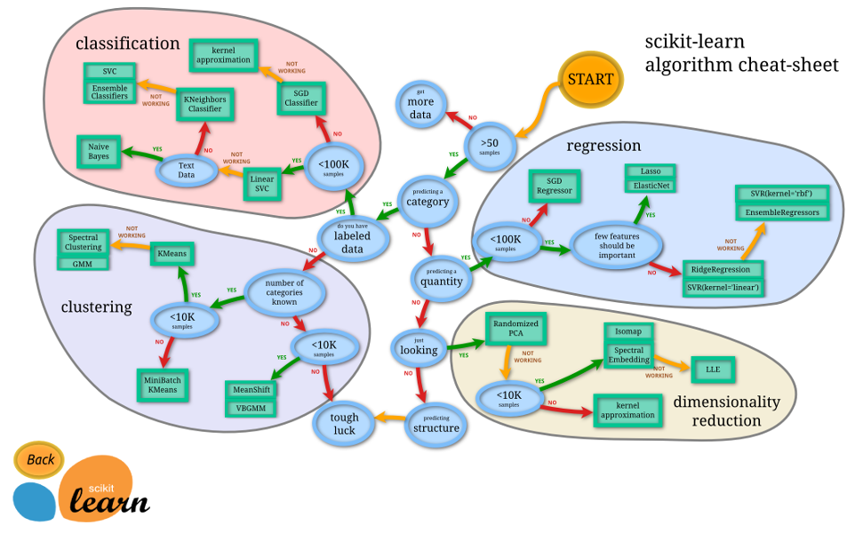Numpy, Scipy, ...
Numerical and scientific libraries for making complex computations efficiently.
Ready
Set
Go
It's sunny, so let's categorize
some ❀ ❀ ❀...
It's sunny Some sun is able to get through the clouds, so let's categorize
some ❀ ❀ ❀...
Contender #1
Iris Setosa
Contender #2
Iris Versicolor
Contender #3
Iris Virginica
The challenge
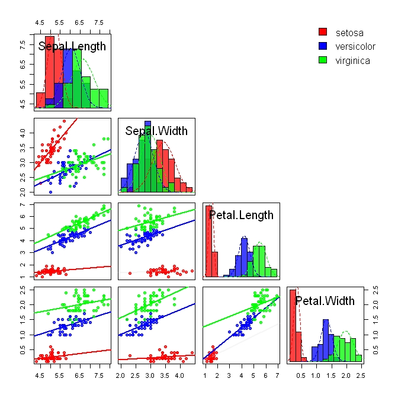Demo time
Iris decision tree
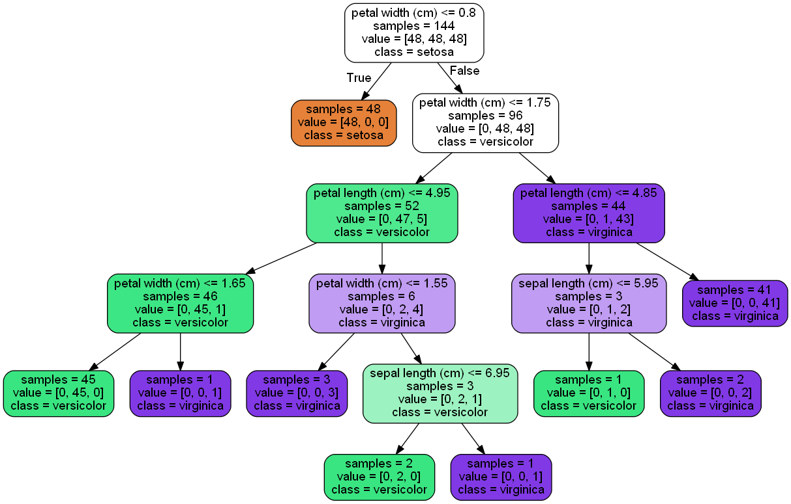$\frac{1}{2}$ the training data
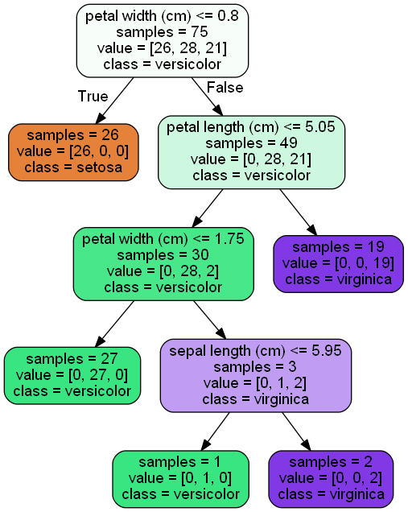ML pipeline
- Common interface for all classifiers:
- fit($\mathbf{X}_{\mbox{train}}$, $y_{\mbox{train}}$) $\rightarrow$ train model
- predict($\mathbf{X}_{\mbox{test}}$) $\rightarrow$ $y$
- Easy swapping one algorithm for another.
Let's code a classifier... (demo)
Replacing the loan officer
Some input data: income, spending, age, occupation, etc.
We identified significant features using PCA/AIC/BIC/etc.
We trained the model.
User provides data (e.g. logs in with the bank/PayPal/eBay/Amazon account) $\rightarrow$ the more information the better loan decision we can make for the user.
We make a loan decision in an instant.
Due to hard data and lack of cognitive bias decisions are better on average.
Profit $$$
Replacing the loan officer with 10 lines of code
(demo time)
Does anyone do it?
Example:
You link your online accounts with Iwoca.
When you need a loan, the system already has your data, and makes an optimal decision in an instant.
Bonus: AI
The big picture
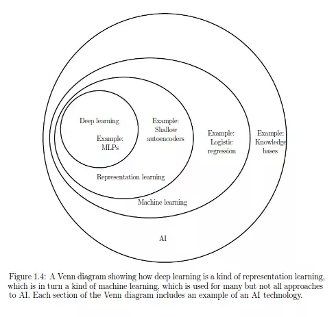The big picture
Advantages
- Can be feed raw input (e.g. pictures and not the features)
What makes for good data set for AI training?
- diversity
- quantity
Demo plant
So how do we get palapa?
The plan
Classify pictures as aubergine or not.Setup
- Raw pictures crawled from search engine by the name.
- A label classifying object in the picture
- We'll use ConvNet.
- TensorFlow and CUDA (cuDNN)
ConvNet architecture
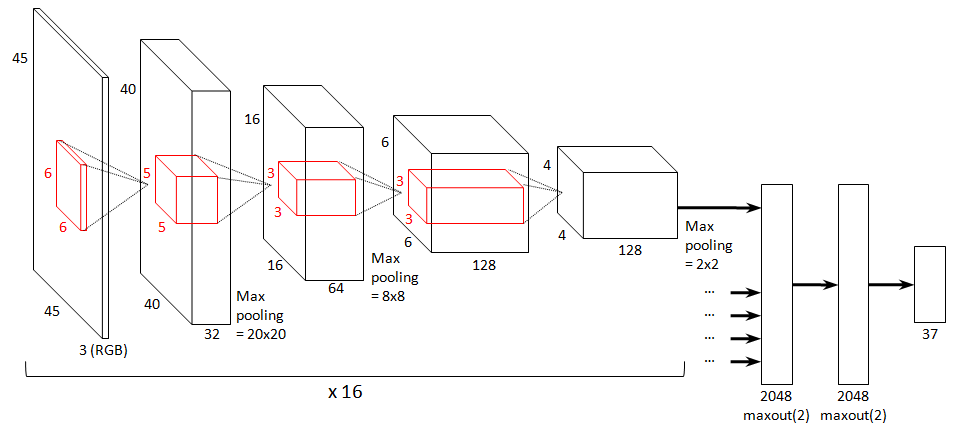Test

DeepMind Playing RTS
The Birth of Intelligence
Computers are learning to think, read, and write. They're also picking up human sensory function, with the ability to see and hear (arguably to touch, taste, and smell, though those have been of a lesser focus). Machine intelligence technologies cut across a vast array of problem types (from classification and clustering to natural language processing and computer vision) and methods (from support vector machines to deep belief networks).
The Birth of Intelligence
The giants in search (Google, Baidu), social networks (Facebook, LinkedIn, Pinterest), content (Netflix, Yahoo!), mobile (Apple) and e-commerce (Amazon) are in an incredible position. They have massive datasets and constant consumer interactions that enable tight feedback loops for their algorithms (and these factors combine to create powerful network effects) — and they have the most to gain from the low hanging fruit that machine intelligence bears.
Open data
Obama announces open data policy
Lots of interesting data is open!
President Barack Obama on 9 May 2013 signed the open data executive order:
Making Open and Machine Readable the New Default for Government Information.(Video on the next slide)
But, many different governments adopt similar open data policies around the world, enabling changes and innovations on unthought before scale.
Data available at data.gov.
- finding Napa earthquake epicenters (by monitoring where people where waking up at given time) and
- daylight saving time effect on our health and productivity (need to mash with other data).
Data Science has potential to transform our lives for the better!